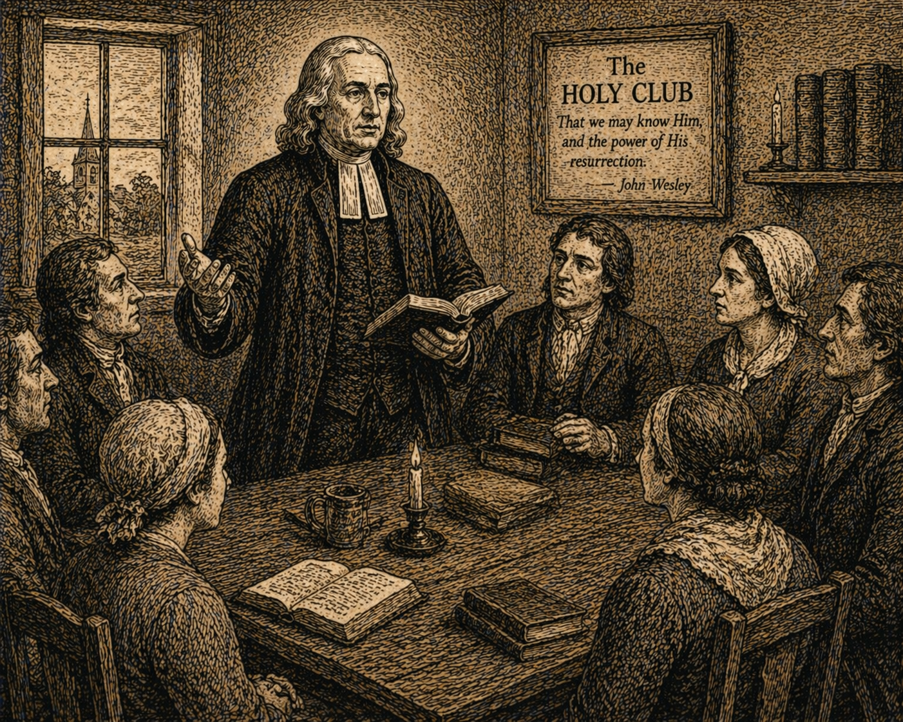

Проповідь 69 - Недосконалість людського знання
Переклад проповіді "The Imperfection Of Human Knowledge".
Проповідь 69 - Недосконалість людського знання

5 березня 1784
Проповіді Джона Веслі – Проповідь 69
Недосконалість людського знання
«Бо ми знаємо частинно» (1 Кор. 13:9).
-
Бажання до знання є загальною рисою людини, закладеною в її найглибшій природі. Воно є незмінним, а не мінливим, у кожному розумному творінні, якщо тільки не пригнічується сильнішим бажанням. І воно ненаситне: «Око не насититься баченням, а вухо слуханням»; так само і розум — жодним ступенем знання, який може бути йому переданий. Це бажання посаджене в кожній людській душі для прекрасних цілей. Воно має перешкодити нам знаходити спочинок у будь-чому земному; підносити наші думки до все вищих об’єктів, що дедалі більше варті нашої уваги, аж поки ми не піднімемося до Джерела всього знання і всієї досконалості — до всемудрого і всеблагого Творця.
-
Проте, хоча бажання знання не має меж, саме знання має. Воно справді обмежене дуже вузькими межами; набагато вужчими, ніж уявляє пересічна людина або визнають учені: що є сильним свідченням того (оскільки Творець не робить нічого марно), що буде інший стан буття, де це нині ненаситне бажання буде задоволене, і де більше не буде такої безмежної відстані між прагненням і його об’єктом.
-
Нинішнє знання людини точно пристосоване до її теперішніх потреб. Його вистачає, щоб застерегти нас від більшості лих, яким ми нині підлягаємо, допомогти їх уникати, і здобути все необхідне в цьому нашому ще дитячому стані життя. Ми знаємо достатньо про природу і чуттєві властивості речей навколо нас настільки, наскільки це служить здоров’ю і силі тіла. Ми вміємо здобувати й готувати їжу. Ми знаємо, який одяг годиться, щоб нас покривати. Ми знаємо, як будувати доми і як наповнювати їх усім потрібним і зручним. Тобто ми знаємо рівно стільки, скільки потрібно для більш зручного життя в цьому світі. А про незліченні речі над нами, під нами і довкола нас ми знаємо майже нічого, окрім того, що вони є. І в цьому нашому глибокому незнанні видно Божу доброту так само, як і Його мудрість. Він навмисно обмежив наше знання з усіх сторін, щоб «сховати гордість від людини».
-
Тому наймудріші з людей за самою природою своєю «знають» тільки «частково». І яку дивовижно малу частину вони знають як про Творця, так і про Його творіння! Це дуже потрібна, але дуже неприємна тема; бо «марна людина хоче бути мудрою». Поміркуймо над цим деякий час. І нехай Бог мудрості та любові відкриє наші очі, щоб ми побачили власне неуцтво!
I. 1. Почнімо з великого Творця. Як мало ми насправді знаємо про Бога! Яку малу частину Його природи ми знаємо! Його суттєвих атрибутів! Яке уявлення ми можемо скласти про Його всюдисущість? Хто здатний осягнути, як Бог присутній тут і в кожному місці, як Він наповнює безмежність простору? Якщо філософи, заперечуючи існування вакууму, мали на увазі тільки те, що немає місця, порожнього від Бога, що кожна точка нескінченного простору наповнена Богом, то, безперечно, жодна людина не може цього заперечити. Але навіть визнавши, що це так, що таке сама ця всюдисущість, це «всюдибуття»? Людина не може цього осягнути так само, як не може охопити весь всесвіт.
-
Всюдисущість, або безмежність Бога, сер Ісаак Ньютон намагався пояснити сильним висловом, назвавши нескінченний простір «сенсорієм Божества». І навіть язичники не вагалися казати: «Усе повне Бога», що по суті відповідає Його власним словам: «Хіба Я не наповнюю небо й землю, говорить Господь». Як добре псалмоспівець передає цю думку: «Куди піду я від Твого Духа, і куди втечу від Твого лиця? Якщо зійду на небо, Ти там. Якщо зійду до пекла, Ти і там. Якщо візьму крила зірниці й оселюся на краю моря, то й там Твоя рука знайде мене, і Твоя правиця мене триматиме». Але все ж, яке уявлення можемо ми скласти про Його вічність або про Його безмежність? Таке знання надто дивне для нас, ми не можемо його досягти.
-
Друга істотна властивість Бога є вічність. Він існував перед усяким часом. Можливо, точніше сказати, що Він існує від віку до віку. Але що таке вічність? Один відомий автор визначає Божу вічність як vitae interminabilis tota simul et perfecta possessio, тобто «водночас цілковите й досконале володіння безкінечним життям». Але наскільки ми стали мудріші від такого визначення? По суті, ми знаємо не більше, ніж знали й раніше. Бо хто здатний уявити, що означає «водночас цілковите й досконале володіння».
-
Якби Бог справді, як дехто стверджує, залишив у кожній людській душі вроджене уявлення про Себе, то ми, без сумніву, розуміли б бодай щось про цю та про інші Його властивості. Адже не можна думати, що Він залишив би в нас хибну або недосконалу думку про Себе. Але правда така: жодна людина ніколи не знаходила і нині не знаходить у собі такої вродженої ідеї в душі. Те мале, що ми знаємо про Бога (окрім того, що приймаємо через натхнення Святого), ми здобуваємо не з якогось внутрішнього враження, а поступово ззовні. «Невидиме Боже», якщо воно взагалі пізнається, «пізнається з того, що створене». Тобто не з того, що Бог нібито написав у наших серцях, а з того, що Він явив у Своїх ділах.
-
Отже, пізнання Бога ми маємо здобувати з Його діл, особливо з діл творіння. Але важко й уявити, як мало ми знаємо навіть про ці діла. Почнімо з того, що далеко від нас. Хто знає, якої величини всесвіт і де його межі? «Ранкові зорі» могли би сказати, що співали разом, коли Бог розтягував його лінії і ніби окреслював його межу. Але все, що за межами нерухомих зір, повністю приховане від людей. А що ми знаємо про самі нерухомі зорі? Хто назве їхню кількість, бодай у тій малій частині, що своїм злитим світлом утворює те, що ми називаємо «Чумацьким Шляхом»? І хто знає їхнє призначення? Чи це безліч сонць, які освітлюють свої планети? Чи вони служать лише цьому, або діють інакше, як припускає пан Гатчінсон, підтримуючи якимось невідомим способом безперервний колообіг світла й духа? Хто знає, що таке комети? Чи це планети, які ще не сформувалися до кінця, або ті, що вже були знищені спаленням? Чи це тіла зовсім іншої природи, про яку ми не здатні скласти уявлення? А що таке сонце? Ми знаємо його користь, але хто знає, з чого воно складається? Ми досі не можемо певно сказати навіть того, чи воно рідке, чи тверде. Хто знає точну відстань сонця від землі? Одні астрономи говорять про сто мільйонів миль, інші про вісімдесят шість, багато хто рахують дев’яносто. Інші, не менш відомі, твердять, що відстань не більша як п’ятдесят, а деякі з них називають лише дванадцять. Нарешті доктор Роджерс намагався довести, що вона становить рівно два мільйони дев’ятсот тисяч миль.
Ми знаємо дуже мало навіть про це величне світило, сонце, яке є ніби оком і життям нижчого світу. Так само мало ми знаємо і про планети, що його оточують, і навіть про найближче нам небесне тіло, місяць. Дехто, правда, твердив, що розгледів на її плямистій кулі ріки й гори, і навіть намагався позначити на ній моря та континенти. Але після всього цього ми знаємо про неї майже нічого. Ми маємо лише дуже непевні здогади навіть про це найближче небесне тіло.
-
Але перейдімо до речей, що ще ближчі до нас, і запитаймо, що ми про них знаємо. Скільки ми розуміємо про це дивовижне явище, світло? Як воно доходить до нас? Чи воно йде від сонця безперервним потоком? Чи, може, сонце штовхає частинки, найближчі до себе, а ті штовхають інші далі й далі, аж до краю цілої системи? Далі, чи має світло тяжіння, чи ні? Чи воно притягує або відштовхує інші тіла? Чи воно підлягає тим самим загальним законам, що діють у всій іншій матерії? Чи воно є тілом sui generis, тобто чимось зовсім особливим, відмінним від усього іншого? Чи світло це те саме, що електрична «рідина»? І чому інші тіла можуть перетинати його шлях? Чому посудина може бути заряджена до певної міри, а далі вже ні? Можна поставити ще тисячу подібних запитань, на які жодна жива людина не може дати певної відповіді.
-
Здається, ми мали би добре розуміти повітря, яким дихаємо, і яке оточує нас з усіх боків. Завдяки дивовижній властивості пружності воно ніби є загальною пружиною природи. Але чи пружність є для повітря чимось невід’ємним? Ні! Бо нещодавні численні досліди, як твердять, показували, що повітря можна «закріпити», тобто позбавити його пружності, а потім знову відновити.
Отже, воно є пружним лише настільки, наскільки пов’язане з електричним вогнем. І чи не є цей електричний, або ефірний, вогонь єдиною справжньою пружною силою в природі? Хто знає, якою силою роса, дощ та інші пари піднімаються та опускаються в повітрі? Чи можемо ми пояснити це звичайними засадами? Чи не доводиться нам, разом з одним недавнім автором, визнати, що звичайних пояснень тут не вистачає, і що це можна пояснити лише через принципи електрики?
-
Спустимся тепер до землі, по якій ми ходимо, яку Бог особливо дав дітям людським. Чи розуміють діти людські цю землю? Якщо земна куля має в діаметрі сім або вісім тисяч миль, скільки ми з цього знаємо? Можливо, милю чи дві її поверхні: на стільки сягнуло мистецтво людини. Але хто може сказати, що лежить під шаром каміння, металів, мінералів та інших копалин? Це лише тонка кора, яка займає дуже малу частку від усього обсягу землі. Хто розповість нам про внутрішні частини земної кулі? З чого вони складаються? Чи є в центрі вогонь, велике резервуарне джерело, яке живить не лише вулкани, але й сприяє (хоча ми не знаємо як) дозріванню самоцвітів і металів, а може, й росту рослин і добробуту тварин? Чи, може, велика безодня все ще прихована в надрах землі — центральна прірва вод? Хто це бачив? Хто може сказати? Хто може дати раціональне задоволення розумному запитувачеві?
-
Як багато навіть на самій поверхні земної кулі й досі нам зовсім невідоме. Як мало ми знаємо про полярні краї, і про північні, і про південні, як у Європі, так і в Азії. Як мало знаємо про великі землі у внутрішніх частинах Африки та Америки. А ще менше ми знаємо про те, що приховує широке море, велика безодня, яка покриває таку значну частину земної кулі. Більшість її «комор» недоступні людині, тому ми не можемо сказати, чим вони наповнені. Та й на суходолі, серед речей, які ніби прямо перед очима, ми знаємо дуже мало. Візьміть навіть найпростіші метали або камені. Як недосконало ми розуміємо їхню природу і властивості. Хто знає, що саме відрізняє метали від інших копалин? Кажуть: «Вони важчі». Це правда. Але чому вони важчі? Яка точна відмінність між металами і камінням? Або між одним металом і іншим, наприклад між золотом і сріблом, між оловом і свинцем? Усе це лишається таємницею для синів людських.
-
Перейдемо до царства рослин. Хто може довести, що сік у будь-якій рослині циркулює через її судини регулярно, або що він не циркулює? Хто може вказати специфічну різницю між одним видом рослин і іншим або особливу внутрішню будову й розташування їхніх складових частин? Та й чи розуміє якась людина в повноті природу й властивості хоча б однієї єдиної рослини під небом?
-
Щодо тварин: чи є мікроскопічні тварини, так звані, справжніми тваринами чи ні? Якщо так, то чи не відрізняються вони суттєво від усіх інших тварин у всесвіті, оскільки не потребують їжі, не народжуються й не народжують? Чи це взагалі не тварини, а просто неживі часточки матерії в стані бродіння? Якими невігласами є наймудріші люди стосовно всієї справи народження, навіть народження людини! У книзі Творця, справді, всі наші члени були записані, «що день у день творилися, коли ще жодного з них не було»; але яким чином було передано перший рух серцю? Коли і як була додана безсмертна душа до неживої глини? Це суцільна таємниця: і ми можемо лише вигукнути: «Я дивно створений».
-
Щодо комах, то останнім часом було зроблено багато відкриттів. Але як мало це все, що вже відкрито, порівняно з тим, що лишається невідомим! Скільки мільйонів комах через свою крайню дрібність повністю вислизає від будь-яких наших досліджень. Та й узагалі дрібні частини навіть найбільших тварин вислизають від нашої найбільш пильної праці. Чи знаємо ми більше про риб, ніж про комах? Велика частина, а може й найбільша частина мешканців вод для нас прихована. Імовірно, видів морських тварин стільки ж, як і сухопутних. Але як мало з них ми знаємо. І навіть про тих небагатьох, яких знаємо, ми розуміємо дуже мало. Про птахів ми знаємо трохи більше, але справді лише трохи. Про дуже багатьох ми майже нічого не знаємо, окрім їхнього зовнішнього вигляду. Про інших, головно про тих, що живуть біля наших осель, ми знаємо кілька очевидних властивостей. Але й про них ми не маємо ґрунтовного, належного знання. Так само мало ми знаємо і про звірів. Ми не розуміємо, звідки беруться різні вдачі та якості не тільки в різних видах, але й в окремих тваринах одного й того самого виду. Буває навіть так, що такі відмінності є в тих, що походять від тих самих батьків, від того самого самця й тієї самої самки. Чи звірі є просто машинами? Якби так, вони не були би здатні ні до втіхи, ні до болю. Вони не мали би чуттів, не бачили б і не чули б, не відчували би смаку й не мали би нюху. Тим більше вони не могли би знати, пам’ятати або рухатися якось інакше, ніж тоді, коли їх штовхають ззовні. Але щоденний досвід показує, що це зовсім не так.
-
Гаразд, але якщо ми не знаємо нічого іншого, то чи не знаємо ми принаймні самих себе, наші тіла й наші душі? Що таке наша душа? Ми знаємо, що це дух. Але що таке дух? Тут ми зупиняємося. І де саме перебуває душа: у шишкоподібній залозі, у всьому мозку, у серці, у крові, в якійсь одній частині тіла, чи, якщо взагалі можна зрозуміти цей вислів, «вся в цілому і вся в кожній частині»? Як душа з’єднана з тілом, як дух пов’язаний із грудкою матерії? Який це таємний, невидимий зв’язок, що тримає їх разом? Чи може наймудріший із людей дати справді задовільну відповідь бодай на одне з цих простих запитань?
І щодо самого нашого тіла, як мало ми знаємо. Під час нічного сну здорова людина випаровує майже на чверть менше тоді, коли вона потіє, ніж тоді, коли не потіє. Хто здатний це пояснити? Що таке плоть, зокрема м’язи? Чи волокна, з яких вони складаються, мають певну межу поділу, чи їх можна ділити без кінця?
Як м’яз діє, коли ніби надувається і через це скорочується? Але чим саме він «надувається»? Якщо білою кров’ю, то звідки вона приходить і як потрапляє туди? І куди вона дівається в ту мить, коли м’яз розслабляється? Чи нерви порожнисті, чи щільні? Як саме вони діють: чи через коливання, чи через передавання того, що називали «тваринними духами»? А що таке ці «тваринні духи»? Чи не є це тим, що тепер назвали б електричною силою? Що таке сон, у чому він полягає? Що таке сновидіння? Як відрізнити сонні видіння від думок наяву? Я сумніваюся, що хтось це знає. О, як мало ми знаємо навіть про все Боже творіння!
II. 1. Але чи не краще ми знаємо Його діла провидіння, ніж Його діла творіння?
Один із перших принципів релігії такий: Його Царство панує над усім. Тому ми можемо впевнено сказати: «Господи, Правителю наш, яке величне Твоє ім’я по всій землі». Думка, ніби світом керує випадок або що він має хоч якусь частку в керуванні, є дитячою. Ні, навіть у тих речах, які простому оку здаються цілком випадковими. «Жереб кидається в пазуху, але весь присуд його від Господа». Сам наш благословенний Учитель усунув тут будь-який сумнів: «Жоден горобець», каже Він, «не падає на землю без волі Отця вашого, що на небі». А щоб сказати це ще сильніше, Він додає: «навіть волосся на голові вашій усе полічене».
-
Але хоч ми й знаємо цю загальну істину, що все керується Божим провидінням (як сказав язичницький оратор: Deorum moderamine cuncta geri (усе відбувається під управлінням Бога)), все ж про подробиці ми знаємо дивовижно мало. Ми мало розуміємо, як Бог провадить народи, родини і окремих людей. У цьому є висоти й глибини, яких наш розум не здатний охопити. Тепер ми можемо зрозуміти лише малу частину Його доріг, а решту пізнаємо потім.
-
Навіть коли йдеться про цілі народи, ми дуже мало розуміємо, як Бог провадить їх Своїм провидінням! Скільки незліченних народів у східному світі колись процвітали, були страхом для всіх довкола, а тепер зникли з лиця землі, і разом з ними зникла навіть пам’ять про них! На заході було так само. І в Європі ми читаємо про багато великих і могутніх царств, від яких залишилися лише назви. Народи зникли і стало так, ніби їх ніколи не було. Але чому Всемогутньому Правителеві світу захотілося змести їх мітлою знищення, ми не можемо сказати. Тим більше, що ті, хто прийшов після них, часто були мало кращі.
-
Але не лише щодо давніх народів Божі розпорядження в Його керуванні світом для нас незбагненні. Те саме бачимо і тепер. Ми не вміємо пояснити, як Бог діє нині щодо мешканців землі. Ми знаємо, що «Господь любить кожну людину, і Його милість над усіма Його ділами». Але нам важко зрозуміти, як це поєднати з тим, що відбувається під Його провидінням. Хіба не здається, що майже вся земля нині сповнена темряви й жорстокості? Подивіться, зокрема, на велику й людну імперію Індостан. Скільки сотень тисяч бідного, тихого люду було знищено, а їхні тіла залишилися на землі, мов гній. Подумайте також про незліченні острови в Тихому океані. Навіть якщо там немає англійських головорізів, їхній стан, здається, мало чим кращий за стан вовків і ведмедів. І хто дбає про їхні душі або про їхні тіла? Але чи ж Отець людей не дбає про них? О таємнице провидіння!
-
І хто дбає про тисячі, десятки тисяч, якщо не про мільйони нещасних африканців? Хіба не цілі отари цих бідних овець, людських істот, безперервно женуть на торг і продають, як худобу, в найганебніше рабство, без жодної надії на визволення, окрім смерти? Хто дбає про тих вигнанців людей, відомих як Hottenots (готтентоти)? Це правда, один недавній автор доклав чимало праці, щоб показати їх як поважний народ. Але з якої причини, сказати важко. Бо він сам визнає (як нібито приклад їхньої витонченості), що сирі нутрощі овець та іншої худоби є не тільки однією з їхніх найулюбленіших страв, але й прикрасами на руках і ногах. А як нібито приклад їхньої релігії він каже, що син не вважається чоловіком, доки не поб’є свою матір майже до смерті, і що коли батько старіє, син прив’язує його до малої хатини й залишає там помирати з голоду. О, Отче милосердя, чи це діла Твоїх власних рук, куплені кров’ю Твого Сина?
-
Чи не так само жалюгідним є цивільний і релігійний стан нещасних американських індіанців — того, що лишилося від них? Адже в деяких провінціях не залишилося жодного з них живого. На острові Еспаньйола, коли туди вперше прибули християни, мешкало три мільйони людей. Тепер ледве чи залишилося там дванадцять тисяч. І в якому ж вони стані, як і інші індіанці, розсіяні по великому континенту Південної і Північної Америки? Вони зовсім не мають релігії; у них немає жодного громадського богослужіння! Бог не перебуває в їхніх думках. Більшість із них не має жодного громадського устрою: ані законів, ані правителів, кожен чинить, що йому здається правильним. Тому їх стає щораз менше; і, дуже ймовірно, через століття чи два на землі не залишиться жодного з них.
-
Однак мешканці Європи перебувають у кращому стані. Вони мають цивілізацію, закони, керуються магістратами; у них є релігія; вони — християни. Я побоююся, що багато з тих, хто зветься християнами, має мало спільного з істинною релігією. Що скажете ви про тисячі лапландців, фінів, самоїдів та ґренландців? І загалом про всіх, хто живе у високих північних широтах? Чи вони більш цивілізовані, ніж вівці або воли? Порівнювати їх із кіньми або будь-якою іншою свійською худобою — це було би навіть надто велика честь для них. Додайте до цього десятки тисяч людей, що мерзнуть у снігах Сибіру, і стільки ж, якщо не більше, що блукають у пустелях Татарії. Додайте тисячі й тисячі поляків і москвитян, і християн (так званих) з Туреччини в Європі. І чи «так полюбив Бог» усіх цих, «що дав Свого Сина, Єдинородного Свого Сина, щоб вони не загинули, але мали вічне життя»? Тоді чому вони такі? О, диво понад усі дива!
-
Чи немає чогось настільки ж загадкового у розподілі самого християнства? Хто може пояснити, чому християнство не поширене настільки широко, як і гріх? Чому ліки не послані туди, де є хвороба? Але, на жаль! «Голос його» нині «не рознісся по всій землі». Отрута розповсюджена по всій земній кулі; протиотруту ж знають тільки в одній шостій її частині. І, що ще сумніше, як сталося, що мудрість і доброта Божа дозволяють самій протиотруті бути настільки спотвореною — не тільки в країнах, де панує Римська Церква, але майже скрізь, де існує християнство? Спотвореною настільки, що вона часто змішана з непотрібними, а часто й шкідливими домішками, так що втрачає всю або майже всю свою первісну силу? Так, вона настільки спотворена навіть тими, кого Бог послав проповідувати її, що часто додає ще більше отрути до того зла, яке мала би лікувати! Через це серед християн не більше милосердя або правди, ніж серед язичників. Більше того, є всі підстави стверджувати (і, боюся, що справедливо), що багато хто, названий християнами, набагато гірші за поган навколо них: більш розбещені, більш віддані всім видам нечестя, не боячись Бога й не шануючи людей! О, хто може це осягнути? Невже Той, Хто є вищий за всіх, не зважає на це?
-
Так само незбагненні для нас численні дії Божого провидіння щодо окремих родин. Ми зовсім не можемо збагнути, чому Він підносить одних до багатства, слави й влади, тоді як інших принижує убогістю й різними стражданнями. Деяким у всіх справах надзвичайно щастить, і світ сипле на них свої блага; тоді як інші, попри всі свої труди й старання, ледве можуть заробити на щоденний хліб. І, можливо, процвітання і шана супроводжують перших аж до смерті, тоді як інші до кінця своїх днів п’ють чашу скорботи, хоча для нас не видно ніякої причини ні для успіху одних, ні для нещастя інших.
-
Так само ми не можемо збагнути дій Божого провидіння щодо окремих осіб. Ми не знаємо, чому доля цієї людини — бути народженим у Європі, а тієї — в глухих пустелях Америки; чому один народжується в родині багатій і знатній, а інший — у бідній і пригнобленій; чому батьки одних міцні й здорові, а інших — слабкі й хворобливі; внаслідок чого одна людина змушена з дитинства тягнути жалюгідне існування, зазнаючи нестатків, болю й незліченних спокус, від яких не може знайти порятунку. Скільки людей з найперших днів свого життя оточені такими обставинами і такими людьми, що, здається, у них немає жодного шансу (як іноді кажуть), жодної можливості бути корисними ні собі, ні іншим! Чому вони, ще до того, як самі зроблять якийсь вибір, опиняються в такому скрутному становищі? Чому шкідливі люди так часто опиняються на їхньому шляху, що вони не знають, як уникнути їхнього впливу? І чому добрі люди часто залишаються для них невідомими або віднімаються саме тоді, коли вони найбільше в них потребують? О Боже, які незбагненні суди Твої і недослідимі дороги Твої!
III. 1. Чи здатні ми краще збагнути Його справи благодаті, ніж справи провидіння?
Одне не викликає сумніву: «без святості ніхто не побачить Господа». Чому ж тоді, наскільки ми можемо судити, така величезна більшість людства ще від народження позбавлена і засобів, і самої можливості прийти до святості? Наприклад, яку можливість має готтентот, новозеландець або мешканець Нової Землі, якщо він там народився, там живе і там помирає, хоч колись довідатися, що таке святість, а отже й хоч колись досягти її? Хтось може заперечити: «Він згрішив ще до народження, у попередньому стані. Тому його й поставлено в такі умови. І це милість, що він має друге випробування». Я відповідаю так: навіть якщо припустити такий попередній стан, те, що ви називаєте другим випробуванням, насправді майже не є випробуванням. Щойно він з’являється на світ, він цілковито залежить від своїх диких батьків і родичів. Вони від найпершого проблиску розуму виховують його в тому самому невігластві, безбожності й варварстві, в якому живуть самі. Він, по суті, не має жодного шансу на інше виховання, не має можливости дізнатися щось краще. Яке ж тоді це випробування? Від часу, коли він приходить у світ, і до часу, коли виходить із нього, здається, він поставлений у такі умови, що майже неминуче житиме в безбожності й неправедності. Але як це може бути? Як це може стосуватися багатьох мільйонів душ, яких Бог створив? Хіба Ти не Бог «усіх кінців землі, і тих, що перебувають у глибоких водах»?
-
Прошу звернути увагу: якщо перетворити це на заперечення проти об’явлення, то воно з тією самою силою спрямоване і проти природної релігії, не менше, ніж проти об’явленої. Якби це заперечення було вирішальним, воно привело б нас не до деїзму, а до прямого атеїзму. Воно було б аргументом не тільки проти християнського об’явлення, але й проти самого існування Бога. І все ж я не бачу, як уникнути сили цього заперечення, хіба що покластися на незбагненну мудрість Божу, з глибоким усвідомленням нашого незнання і нашої нездатності осягнути Його задуми.
-
Навіть серед нас, які мають надзвичайні переваги, яким довірено Слово Боже, яке є світильником для нашої ноги і світлом на стежці, усе ж існує безліч обставин у Його діяннях, що перевищують наше розуміння. Ми не знаємо, чому Він дозволив нам так довго ходити своїми власними дорогами, перш ніж переконати нас у гріху. Чому Він використав саме той або інший засіб, саме той або інший спосіб. І тисячі обставин супроводжували процес нашого навернення, які ми не розуміємо. Ми не знаємо, чому Він дозволив нам чекати так довго, перш ніж об’явити Свого Сина в наших серцях; або чому це перетворення з темряви у світло супроводжувалося тими чи іншими конкретними обставинами.
-
Без сумніву, це особливе право Бога зберігати «дні й години у Своїй владі». І ми не можемо назвати причину, чому з двох людей, однаково спраглих за спасінням, одного Бог приймає в Свою прихильність одразу, а інший мусить тужити місяцями або роками. Один, щойно покличе до Бога, одержує відповідь і сповнюється миром і радістю у вірі. Інший шукає Його, здається, з такою самою щирістю і ревністю, але не може знайти ні Його, ні бодай якогось відчуття Його прихильности тижнями, місяцями або роками. Ми добре знаємо, що це не наслідок якогось абсолютного декрету, який одного ще перед народженням призначає до вічної слави, а іншого до вічного вогню. Але в чому причина, ми не знаємо. Досить того, що Бог знає.
-
Є також велика різноманітність у способі й у часі, коли Бог дає Свою освячуючу благодать, якою Він дає Своїм дітям змогу віддати Йому ціле серце, і ми не вміємо цього пояснити. Ми не знаємо, чому Він дає це декому ще перед тим, як вони про це просять (ми бачили деякі безсумнівні приклади), декому після того, як вони шукали цього лише кілька днів, а інших віруючих допускає чекати, можливо, двадцять, тридцять або сорок років. Інших Він доводить до цього аж за кілька годин, або навіть хвилин, перед тим, як їхні духи повернуться до Нього. Бо і щодо різних обставин, які супроводжують сповнення великої обітниці: «Я обріжу твоє серце, щоб ти любив Господа Бога твого всім серцем твоїм і всією душею твоєю», Бог, безперечно, має причини. Але ці причини здебільшого сховані від дітей людських. І ще: дехто з тих, хто спроможний любити Бога всім серцем і всією душею, зберігає це благословення без перерви, аж доки його не буде прийнято в лоно Авраамове. А інші не зберігають його, хоч і не усвідомлюють, що засмутили Святого Духа Божого. І цього ми також не розуміємо. У цьому ми «не знаємо думки Духа».
IV. Кілька цінних уроків ми можемо винести з глибокого усвідомлення нашого власного незнання.
По-перше, ми можемо навчитися уроку покори: не «думати про себе» — особливо про свій розум — «більше, ніж належить думати»; але «думати скромно»; будучи глибоко переконаними, що ми неспроможні навіть на одну добру думку самі по собі; що ми були би схильні оступитися на кожному кроці, помилятися кожної миті нашого життя, якби не мали «помазання від Святого», яке «перебуває в нас»; якби нам не допомагав Той, Хто знає, що є в людині, якби в нас не діяла «іскра духа в людині» і «натхнення Святого», яке «дає розуміння».
По-друге, з цього ми можемо навчитися уроку віри, довіри до Бога. Повне усвідомлення власного незнання може навчити нас повністю покладатися на Його мудрість. Воно може навчити нас (а це не завжди так легко, як здається) довіряти Невидимому Богу більше, ніж ми Його бачимо! Воно може допомогти нам засвоїти цей нелегкий урок: руйнувати наші міркування і «всяку висоту, що підноситься проти пізнання Бога», і приводити кожну думку до послуху Христові. Нині існують дві великі перепони для правильного судження про Божі дії щодо людей. Перша — незліченні факти щодо кожної людини, які ми не знаємо і не можемо знати: вони заховані від нас непроникною темрявою. Друга — навіть коли ми знаємо вчинки людей, ми не знаємо їхніх думок. А без цього ми можемо тільки дуже обмежено судити про їхні зовнішні дії. Пам’ятаючи про це, не робіть передчасних висновків щодо Божих розпоряджень, доки Він не «виведе на світло сховане в темряві» і не відкриє «думки сердець».
По-третє, усвідомлення нашого незнання навчає нас уроку покори перед Божою волею. Ми повинні навчитися завжди й у всіх випадках казати: «Отче, не як я хочу, але як Ти!» Це був останній урок, якого наш благословенний Господь (як людина) навчився, перебуваючи на землі. Він не міг піти вище за цю молитву: «Не як я хочу, але як Ти», аж доки не схилив голову й не віддав духа. І ми також маємо уподібнитися Йому в смерті, щоб «пізнати силу Його воскресіння!» (Проповідь виголошена у Брістолі, 5 березня 1784 року).